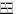
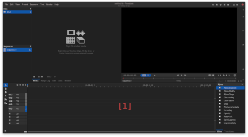
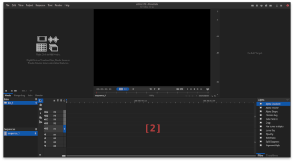
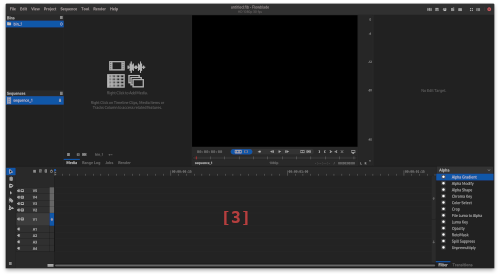
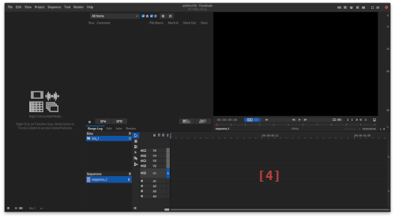
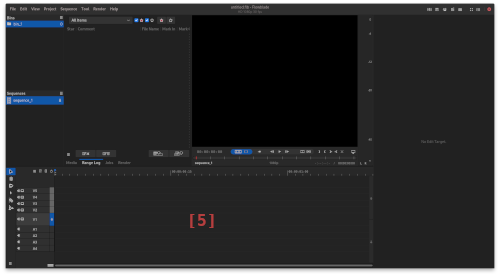

Flowlade provies functionality to configure application layout by moving Panels to named postions or switching to use one of the available preset layouts.
User custom layouts can also be named and saved to be used from the same menu as the preset layout options.
Using preset layouts
Changing to another preset layout
- Press Layout button

in the right side of the application menubar. - Select one of the preset layout options.
- New layout will be applied immediately.
Alternatively it is possible to use appmenu.
- Select one of the options in application menu submenu View > Panel Placement > Preset Layouts.
- New layout will be applied immediately.
Preset layout options
Five layout options are available in the Layout menu.





[1] Monitor Left.
[2] Monitor Center.
[3] Top Row 4 Panels.
[4] Media Panel Left Column.
[5] Edit Panel Right Column.
Option [3] Top Row 4 Panels is only available for screen sizes with widht 1920 pixels or higher.
Custom layouts
Creating custom layouts
- Open position submenu for panel you wish to move to another position in submenu View > Panel Placement.
- For example if you wish to move Edit panel to another position open View > Panel Placement > Edit Panel and select one of the options Top Row Default Notebook, Top Row Right, Left Column, Bottom Row Left, Right Column
- Panel will be moved to the new position immediately.
- Note that it is not quaranteed that the new layout created by moving a panel will fit the available screen space.
Saving custom layouts
- Press Layout button in the right side of the application menubar.
- Select menu item Save current layout.
- A dialog with text input widget will be presented. Provide a name for the custom layout and press button Save.
Applying custom layouts
- Press Layout button in the right side of the application menubar.
- Custom layouts will appers as menu items with the name given when saved as item text.
- Select the wanted custom layout menu item.
- New layout will be applied immediately.
Available panel positions
Application layout has two rows: top row which always contains the Monitor Area and bottom row which always contains the Timeline.
Some panels can be positioned in left or right side columns which cover the full application height.
There are 7 named positions that panels can be moved into.
Top Row Project Panel Default. This is the left most position on top row.
Top Row Default Notebook. This is betweeen Top Row Project Panel Default and Monitor Area in the top row.
Top Row Right. This is the right most position on top row, to the right of Monitor Area.
Bottom Row Left. This is the left most position on bottom row, to the left of Timeline.
Bottom Row Right. This is the right most position on bottom row, to the right of Timeline.
Left Column. This is to the left of all Panels in both rows and covers the full height of the application except for the top menubar.
Right Column. This is to the right of all Panels in both rows and covers the full height of application except for the top menubar.